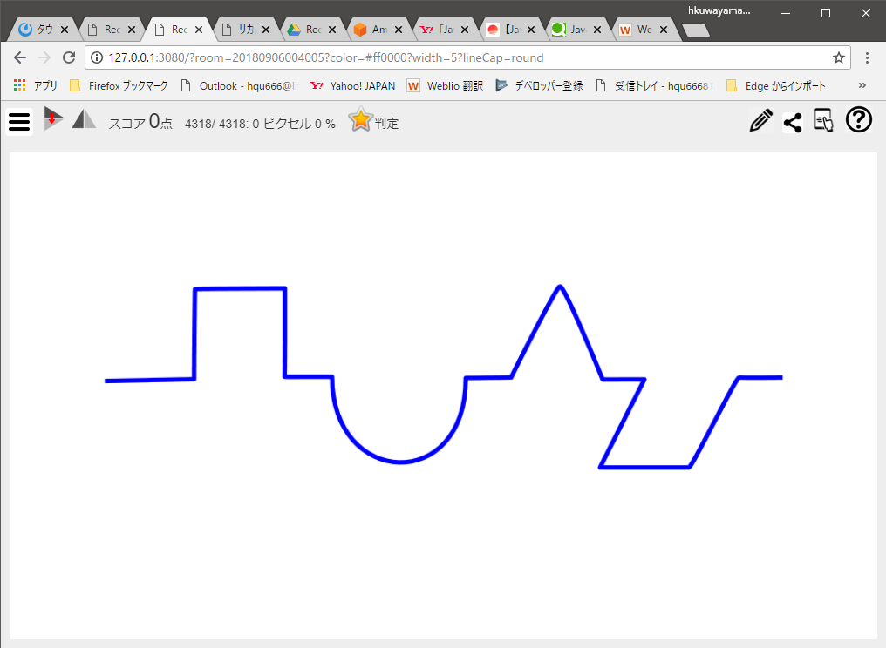
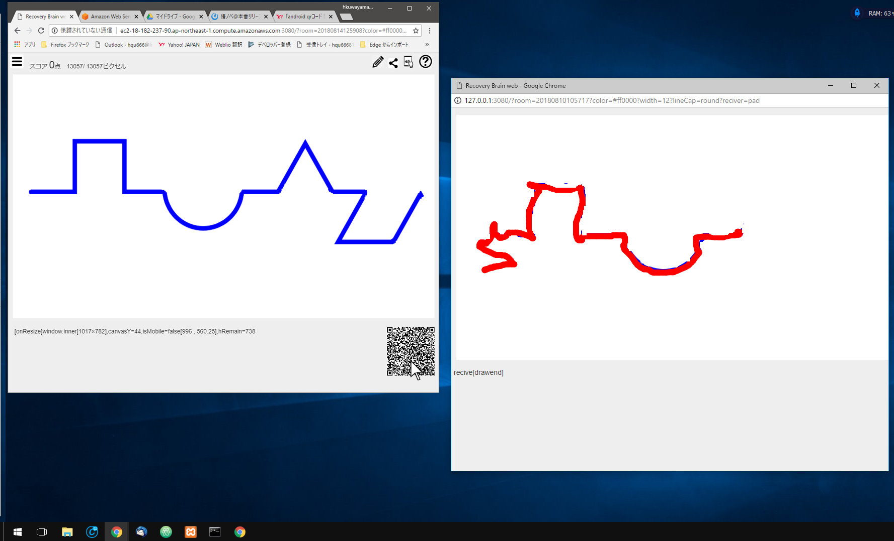
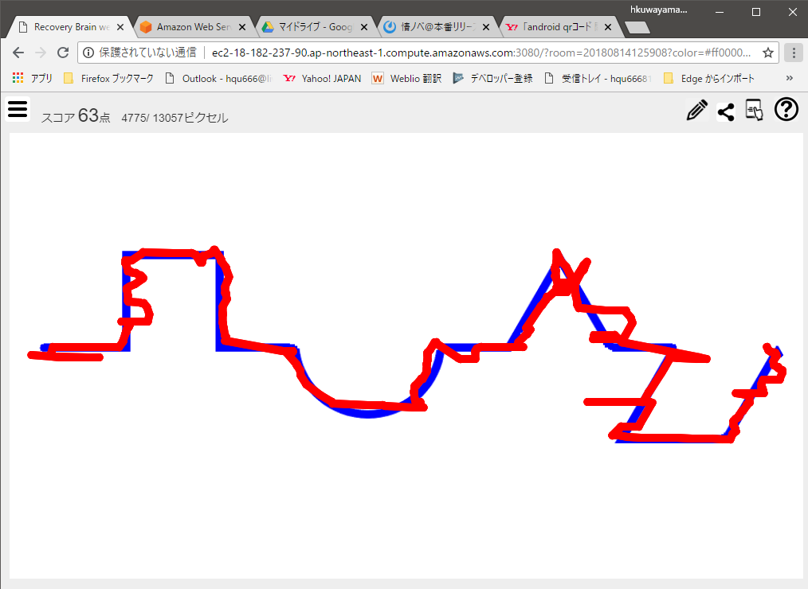

更新日 2018/8/14
リカバリーブラインWeb(仮)の使い方
脳機能回復訓練箱
リカバリーブラインについて
特許番号 第3114239 号
 販売価格 ￥35,000(税込)
販売価格 ￥35,000(税込)

この機能をパソコンやスマートフォンで再現します。
リカバリーブラインWeb(仮)は今では販売されていないこの筐体をパソコンやスマートフォンで再現するwebアプリケーションです。
表示した線や図形などのパターンをトレースする事で表示されている線の消し込みを行い、どれだけ消せたか（正確にトレースできたか）を評価します。
表示した線や図形などのパターンをトレースする事で表示されている線の消し込みを行い、どれだけ消せたか（正確にトレースできたか）を評価します。
web起動時

スマートフォンでトレース
をスマートフォンでスキャン
別ウインドウからトレース

をクリックして同じパソコン内の別ウインドウを開く
結果表示

- 説明の便宜上、リンクして開くスマートホンや同じパソコン内の別ウインドウを「pad」、パッドをなぞって線を消し込む操作を「トレース」と記載します。
- 複数の方がこのwebページへアクセスしても動作が混在しない様「room」という概念で切り分けています。
- roomはご利用された方がリカバリーブラインWeb(仮)にアクセスした日時のタイムスタンプをキーに切り分けます。
- Padを接続すると、その時点でroomで使用している線の色、太さ、先端形状をトレースの初期値として送ります。


 メニューアイコン
メニューアイコン
 トレース元画像
トレース元画像
 説明
説明

 専用アプリをご用意しました。
専用アプリをご用意しました。